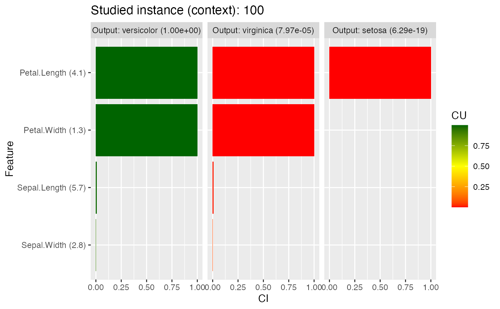

ciu object.ciu.RdSets up a ciu object with the given parameters. This is not the same as
a CIU object as returned by the function ciu.new! a ciu object is a
list with all the parameter values needed for Contextual Importance and
Utility calculations, whereas a CIU object only exposes a set of methods
that can be called using the $ operator. CIU provides the method
$as.ciu for retrieving a ciu object from a CIU object.
ciu(
model,
formula = NULL,
data = NULL,
in.min.max.limits = NULL,
abs.min.max = NULL,
input.names = NULL,
output.names = NULL,
predict.function = NULL,
vocabulary = NULL
)Model/"black-box" object (same parameter as bb for function
ciu.new).
Formula that describes input versus output values. Only to
be used together with data parameter.
The training data used for training the model. If this parameter
is provided, a formula MUST be given also.
ciu.new attempts to infer the other parameters from
data and formula. i.e. in.min.max.limits,
abs.min.max, input.names
and output.names. If those parameters are provided, then they
override the inferred ones.
matrix with one row per output and two columns, where the first column indicates the minimal value and the second column the maximal value for that input.
data.frame or matrix of min-max values of outputs, one row per output, two columns (min, max).
labels of inputs.
labels of outputs.
can be supplied if a model that is not supported by ciu should be used. As an example, this is the function for lda:
list of labels/concepts to be used when producing
explanations and what combination of inputs they correspond to. Example of
two intermediate concepts and a higher-level one that combines them:
list(intermediate.concept1=c(1,2,3), intermediate.concept2=c(4,5), higher.level.concept=c(1,2,3,4,5))
ciu object.
# Explaining the classification of an Iris instance with lda model.
# We use a versicolor (instance 100).
library(MASS)
test.ind <- 100
iris_test <- iris[test.ind, 1:4]
iris_train <- iris[-test.ind, 1:4]
iris_lab <- iris[[5]][-test.ind]
model <- lda(iris_train, iris_lab)
# Create CIU object
ciu <- ciu(model, Species~., iris)
# This can be used with explain method for getting CIU values
# of one or several inputs. Here we get CIU for all three outputs
# with input feature "Petal.Length" that happens to be the most important.
ciu.explain(ciu, iris_test, 1)
#> CI CU cmin cmax outval
#> setosa 1.559656e-11 4.034933e-08 1.231112e-23 1.559656e-11 6.293232e-19
#> versicolor 7.481698e-03 9.893524e-01 9.925182e-01 9.999999e-01 9.999203e-01
#> virginica 7.481698e-03 1.064761e-02 6.266952e-08 7.481760e-03 7.972488e-05
# It is, however, more convenient to use one of the graphical visualizations.
# Here's one using ggplot.
ciu.ggplot.col(ciu, iris_test)
